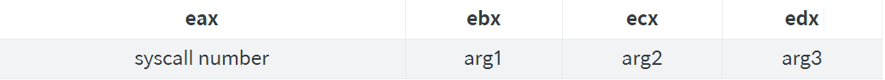

x86汇编学习指南part1
原文链接：https://dere.github.io/2017-02-12/beginners-assembly-part1/
现在写汇编教程的人很少，但我推荐给任何对编程感兴趣的人。它不仅与高级语言相比提供了不同的视角，而且在调试其他语言的代码时可能是有用的。在这两个系列文章中，我们将在x86汇编中实现一个逆波兰表示法计算器。当我们完成后，我们可以这样使用它：
$ ./calc "32+6*" # "(3+2)*6" in infix notation
30
本篇文章第一部分的完整代码可以在下面链接中找到：
https://gist.github.com/dere/79dca38ccc2a5e263d0635f1b7737ec9
本系列文章的完整代码可以在下面链接中找到：
https://gist.github.com/dere/9dff75a67710207e16cd6a8531393ccf
在第1部分中，我们将从一个基本的"Hello world！"程序开始,确保你学习到足够的基础知识进行下一步，然后我们将进一步解释系统调用，调用堆栈，堆栈帧和x86调用约定。最后，我们将通过编写x86汇编的一些基本功能进行练习。在第2部分中，我们将从头开始编写我们的RPN计算器。
阅读本篇文章你需要具备以下知识：
1、一些编程经验
2、了解计算机结构的基本知识（如什么是CPU寄存器）
3、由于我们使用的是Linux操作系统，所以你还需要知道如何使用Linux命令行
准备工作：
1、如前所述，我们将使用Linux（64位或32位皆可）。在本系列文章的代码将无法在Windows或Mac OS X上运行。
2、来自binutils的GNU链接器ld，它预先安装在大多数distros和NASM汇编器上。 在Ubuntu和Debian，您可以安装：
$ sudo apt-get install binutils nasm
3、建议保存一份ASCII码表
http://www.asciitable.com/
为确保您的准备工作成功，保存下面的代码到一个名为calc.asm：
; Allow the linker to find the _start symbol. The linker will begin program execution
; there.
global _start
; Start the .rodata section of the executable, which stores constants (read only data)
; It doesn't matter which order your sections are in, I just like putting .data first
section .rodata
; Declare some bytes at a symbol called hello_world. NASM's db pseudo-instruction
; allows either a single byte value, a constant string, or a combination of the two
; as seen here. 0xA = new line, and 0x0 = string-terminating null
hello_world: db "Hello world!", 0xA, 0x0
; Start the .text section, which stores program code
section .text
_start:
mov eax, 0x04 ; store the number 4 in the eax register (0x04 = write())
mov ebx, 0x1; file descriptor (1 = standard output, 2 = standard error)
mov ecx, hello_world; pointer to the string we're printing
mov edx, 14 ; length of the string
int 0x80; send the interrupt signal 0x80 which the OS interprets as
; a syscall
mov eax, 0x01 ; 0x01 = exit()
mov ebx, 0 ; 0 = no errors
int 0x80
这些解释很简单，你可能对他如何工作还很困惑，不要紧，稍后我们将来讨论系统调用。
先把文件calc.asm汇编成ELF格式的文件，然后将目标文件链接到一个可执行文件，运行：
$ nasm -f elf_i386 calc.asm -o calc
$ ld -m elf_i386 calc.o -o calc
运行时，您应该会看到：
$ ./calc
Hello world!
这部分是可选的，但是为了后面更轻松的汇编文件，我们可以创建使用Make。将以下保存到calc.asm相同目录下文件名为Makefile的文件：
CFLAGS= -f elf32
LFLAGS= -m elf_i386
all: calc
calc: calc.o
ld $(LFLAGS) calc.o -o calc
calc.o: calc.asm
nasm $(CFLAGS) calc.asm -o calc.o
clean:
rm -f calc.o calc
.INTERMEDIATE: calc.o
这样我们就可以简单的使用make而不是按照上面的操作了。
系统调用用于请求操作系统为我们执行操作。 在本文中，我们将只使用两个系统调用：
write()：它将字符串写入文件或流
exit()：退出程序
syscall 0x01: exit(int error_code)
error_code - use 0 to exit without errors, and use anything else (such as 1) for errors
syscall 0x04: write(int fd, char *string, int length)
fd - use 1 for standard output, 2 for standard error output
string - a pointer to the first character of the string
length - the length of the string in bytes
系统调用通过将系统调用号存储在寄存器eax中，然后按ebx，ecx，edx中的参数的顺序设置。你可能注意到exit()只有一个参数 - 在这种情况下，ecx和edx的值无关紧要。

调用堆栈是一个数据结构，用于存储有关每个函数调用信息。 每个函数调用在堆栈中都有一个称为“框架”的段，它存储一些关于当前函数调用的信息，例如该函数的局部变量和返回地址（程序应该在函数完成后跳转到哪里执行）。
我立即注意到一个令人困惑的事情，堆栈在内存中向下增长。当你添加一些东西到堆栈的顶部，它将被插入到一个低于堆栈中之前的内存地址。 换句话说，随着堆栈增长，堆栈顶部的存储器地址减少。为了防止混淆，我不会提到这个事实，除非它是绝对必要的，因为我们正在处理堆栈上的顶部的内存地址。
esp寄存器的目的是指向堆栈的顶部。esp以上的任何数据都被视为垃圾数据。执行推送指令将数据添加到堆栈顶部（或弹出以删除数据）也将移动esp。如果你知道你在干什么，你也可以直接操作esp。
ebp寄存器是类似的，除了它总是指向当前堆栈帧的中间，直接在当前函数的局部变量之前（我们将在后面详细讨论）。 这给了我们允许我们访问函数的第一个参数的优点。但是，调用另一个函数不会自动移动ebp，我们必须每次手动执行。
x86没有像高级语言那样内置了函数的概念。x86调用指令本质上只是一个jmp（goto）到内存中的另一个地方。为了使用子程序，我们使用其他语言的函数（可以接受参数并返回数据），我们必须遵循调用约定。 这也将确保子程序的寄存器不会在调用另一个函数时搞乱。
在调用函数之前，调用者必须：
1、通过将调用者保存的寄存器推送到堆栈来保存它们。一些寄存器能够被调用的函数进行修改，以确保您不会在这些寄存器丢失数据，所以调用者必须在内存中保存它们（将它们推入堆栈）之前调用。 这些寄存器是eax，ecx和edx。 如果你不使用一些或所有这些寄存器，那么你不需要保存它们。
2、将函数的参数以相反的顺序推送到堆栈。这个顺序是确保被调用的函数在从堆栈中弹出时，其参数的顺序是正确的。
3、调用子程序。
如果适用，该函数将其结果存储在eax中，紧接着在call之后，调用者必须：
1、从堆栈中删除函数的参数。这通常可以通过简单地将字节数添加到esp来完成。不过不要忘记堆栈向下增长，所以要从堆栈中删除函数的参数，你必须添加。
2、通过以相反的顺序从堆栈中弹出它们来恢复调用者保存的寄存器。调用函数不会修改其他寄存器。
以下示例总结了上述调用者规则。在本例中，假设我有一个名为_subtract的函数，它接受两个整数（4字节）参数，并返回第一个参数减去第二个参数的结果。 在我的名为_mysubroutine的子程序中，下面我使用了10和2两个整数作为参数来调用_subtract：
_mysubroutine:
; ...
; some code here
; ...
push ecx ; save the caller-saved registers (I choose to not save eax)
push edx
push 2 ; rule 2, push args in reverse order
push 10
call _subtract ; eax is now equal to 10-2=8
add esp, 8 ; remove 8 bytes from the stack (2 arguments, 4 bytes each)
pop edx; restore caller-saved registers
pop ecx
; ...
; some code here where I use my amazingly-useful value in eax
; ...
为了被调用，子程序必须：
1、通过将其推入堆栈来保存上一帧的基址指针寄存器ebp。
2、调整ebp，目前是指向前一帧，调整他指向当前帧，也就是esp的当前值。
3、如果需要为局部变量分配更多的空间，你可以通过移动堆栈指针esp。
4、通过将被调用者保存的寄存器推入堆栈来保存它们。 这些是：ebx，edi和esi。 你不必保存你没有计划修改的任何寄存器。
步骤1后的调用堆栈：

步骤2后的调用堆栈：

完成第4步后的调用堆栈：

您可能会注意到在这些图中的每个堆栈帧返回地址。这些返回地址通过调用自动插入堆栈。ret指令弹出堆栈顶部的地址并跳转到该位置。我们没有使用它的任何东西，我也只解释了为什么函数的局部变量是高于ebp寄存器4个字节，而函数的参数低于ebp寄存器8个字节
从上面的最后一个图中我们也发现了，函数的局部变量总是在地址ebp-4处，也就是ebp寄存器上面4个字节处开始。函数的参数总是在地址ebp+8处，也就是ebp寄存器下面8个字节处开始。如果你遵循被调用者规则，这将是任何函数的情况。
一旦你的函数完成执行然后你想返回，你应该首先设置eax寄存器为你的函数的返回值。此外，你必须：
1、通过以相反的顺序从堆栈中弹出它们来恢复被调用方保存的寄存器。
2、如果你要取消你在上面步骤3中为局部变量分配的堆栈空间。你可以简单地通过设置esp到ebp来完成。
3、通过从堆栈中弹出它来恢复上一帧的扩展基址指针寄存器ebp。
4、用ret返回
现在我们将从上面的例子中实现_subtract函数：
_subtract:
push ebp; save the previous frame's base pointer
mov ebp, esp; adjust ebp
; Here I'd allocate space on the stack for local variables, but I don't need any
; Here I'd save the callee-saved registers, but I won't be modifying any
; My function begins here
mov eax, [ebp+8]; copy the function's first argument into eax. The brackets mean
; to access the data in memory at the location ebp+8
sub eax, [ebp+12] ; subtract the second argument at ebp+12 from the first argument
; My function ends here. eax is equal to my function's return value
; Here I'd restore the callee-saved registers, but I didn't save any
; Here I'd deallocate variables, but I didn't allocate any
pop ebp ; restore the previous frame's base pointer
ret
你可能注意到在上面的例子中，一个函数总是开始相同：
push ebp
mov ebp, esp
还有为局部变量分配空间。
x86有一个方便的指令为我们完成这个步骤：
enter a b
其中a是您要为局部变量分配的字节数，b是嵌套级别，通常为0。
然后函数总是以mov esp, ebp和mov esp, ebp结束。这也可以用一条指令替换：leave。使用这些，我们的例子就变成了：
_subtract:
enter 0, 0 ; save the previous frame's base pointer and adjust ebp
; Here I'd save the callee-saved registers, but I won't be modifying any
; My function begins here
mov eax, [ebp+8]; copy the function's first argument into eax. The brackets mean
; to access the data in memory at the location ebp+8
sub eax, [ebp+12] ; subtract the second argument at ebp+12 from the first argument
; My function ends here. eax is equal to my function's return value
; Here I'd restore the callee-saved registers, but I didn't save any
leave ; deallocate and restore the previous frame's base pointer
ret
现在我们理解了调用约定，我们可以开始编写一些子程序。如果我们想要打印字符串，我们可以使用_print_msg函数，这非常的方便。
对于那个函数，我们需要一个_strlen函数来计算字符串的长度。这个函数可能看起来像C语言：
size_t strlen(char *s) {
size_t length = 0;
while (*s != 0)
{ // loop start
length++;
s++;
} // loop end
return length;
}
在汇编中，使用上面的示例_subtract函数作为基础也很简单：
_strlen:
enter 0, 0 ; save the previous frame's base pointer and adjust ebp
; Here I'd save the callee-saved registers, but I won't be modifying any
; My function begins here
mov eax, 0 ; length = 0
mov ecx, [ebp+8]; copy the function's first argument (pointer to the first
; character of the string) into ecx (which is caller-saved, so
; no need to save it)
_strlen_loop_start: ; this is a label we can jump to
cmp byte [ecx], 0 ; dereference that pointer and compare it to null. By default,
; many times a memory access will default to reading 32 bits
; (4 bytes) from memory. Other times it will always be
; required. Here we use a Size Directive to only read one byte,
; since a character is only one byte
je _strlen_loop_end ; jump out of the loop if it is equal to null
inc eax ; now we're in the loop body. add 1 to our return value
add ecx, 1 ; increment to the next character in the string
jmp _strlen_loop_start ; jump back to the top of the loop
_strlen_loop_end:
; My function ends here. eax is equal to my function's return value
; Here I'd restore the callee-saved registers, but I didn't save any
leave ; deallocate and restore the previous frame's base pointer
ret
这不是太坏，对吧？ 事先写C代码可能会帮助你很多，因为它的大部分可以直接转换为汇编。现在我们可以在printmsg函数中使用这个函数，这将需要我们迄今为止学到的所有东西：
_print_msg:
enter 0, 0
; My function begins here
mov eax, 0x04 ; 0x04 = the write() syscall
mov ebx, 0x1; 0x1 = standard output
mov ecx, [ebp+8]; the string we want to print is the first arg of this function
; at this point we wish to set edx to the length of the string. time to call _strlen
push eax; save the caller-saved registers (I choose to not save edx)
push ecx
push dword [ebp+8] ; push _strlen's argument, the string argument to _print_msg. NASM
; complains if you do not put a size directive here, and I'm not
; sure why. Anyway, a pointer is a dword (4 bytes, 32 bits)
call _strlen; eax is now equal to the length of the string
mov edx, eax; move the length into edx where we wanted it
add esp, 4 ; remove 4 bytes from the stack (one 4-byte char* argument)
pop ecx ; restore caller-saved registers
pop eax
; we're done calling _strlen and setting up the syscall
int 0x80
leave
ret
通过在完整的“Hello world！”程序中使用该函数，我们可以看到我们努力工作的成果：
_start:
enter 0, 0
; save the caller-saved registers (I choose to not save any)
push hello_world ; push the argument to _print_msg
call _print_msg
mov eax, 0x01 ; 0x01 = exit()
mov ebx, 0 ; 0 = no errors
int 0x80
到此我们第一部分的教程就结束了，我们已经介绍所需的x86基础知识，你现在需要编写基本的x86程序，在一篇文章中，我们将运用这些知识来编写我们的RPN就算器。
弗吉尼亚大学x86汇编指南
英特尔寄存器的艺术
NASM：Intel x86指令参考